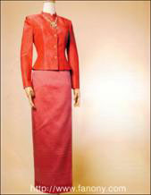

|
ชุดไทยอมรินทร์

ชุดไทยอมรินทร์ คือ ชุดพิธีตอนค่ำ ใช้ยกไหมที่มีทองแกมหรือยกทองทั้งตัว เสื้อกับซิ่นแบบนี้อนุโลมให้ สำหรับผู้ไม่ประสงค์คาดเข็มขัด ผู้มีอายุจะใช้คอกลมกว้าง ๆ ไม่มีขอบตั้งและแขนสามส่วนก็ได้ เพราะความสวยงามอยู่ที่เนื้อผ้า และเครื่องประดับที่จะใช้ให้เหมาะสมกับงานเลี้ยงรับรอง ไปดูละครในตอนค่ำและเฉพาะในงานพระราชพิธีสวนสนามในวันเฉลิมพระชนมพรรษา ผู้ แต่งชุดไทยอมรินทร์ ประดับเครื่องราชอิสริยาภรณ์ (รูปแบบไม่ต่างกับชุดไทยจิตรลดาค่ะ ต่างกันแค่ผ้า จะใช้ผ้าที่หรูหรากว่าเท่านั้นเอง)
ลักษณะเสื้อแขนยาว คอกลม ตั้งติดคอ นุ่งกับผ้าซิ่นไหมยกทอง
ตัดแบบซิ่นป้าย
การ ใช้งาน สำหรับแต่งในงานพิธี ใช้ได้ในหลายโอกาส
|